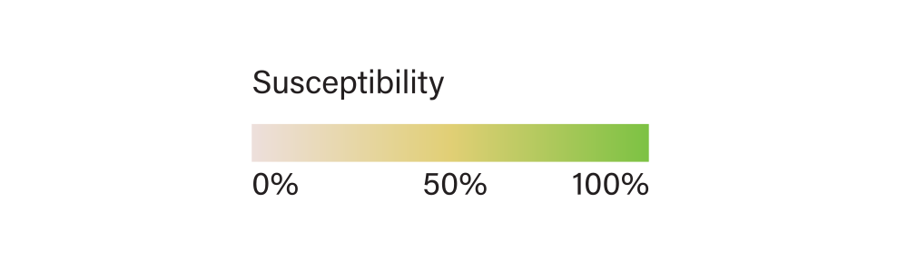
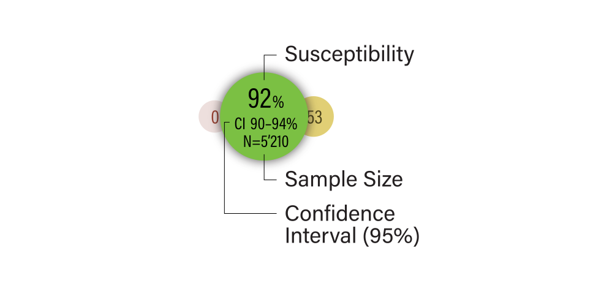

Supported by the Federal Office of Public Health and the Institute for Infectious Diseases Bern, the project INFECT, an INterface For Empirical antimicrobial ChemoTherapy, has been developed. It is aimed at providing a fast and intuitive access to the latest antimicrobial resistance data to assist health professionals with empirical treatment choices tailored to the resistance epidemiology in the patients’ geographical region.
An empirical antibiotic therapy (EAT) is an important clinical concept and a standard procedure for the treatment of many different types of infections in clinical medicine. Its need is based on the lack of knowledge of the causative agent at an early stage of the disease - usually when the patient presents to health professionals. EAT is based on epidemiological data on most frequently isolated pathogens and their antibiotic resistance pattern for certain diseases (e.g., S. pneumoniae, H. influenzae, and M.catarrhalis for otitis media [middle ear infection]). The adequacy of empirical antibiotics is an important determinant of patient outcomes and may play a role in the emergence of bacterial antibiotic resistance. While in Switzerland, the collection of antimicrobial resistance data has been coordinated through anresis.ch for over a decade - with the data being analysed and used to support antimicrobial treatment guidelines - an accessible and easy-to-use platform to visualise this data has yet been lacking.
The coloured circles displayed in the bacteria-antimicrobial matrix represent data regarding non-susceptibility of each bacterium (left column) to each antibiotic (top row). The circle size is logarithmically proportional to the sample size, while semi-transparent circles represent low sample sizes (N <= 20). The number in the middle of the circle represents the percentage of non-susceptible samples:
According to the percentage of non-susceptible samples, the colour of the circle changes gradually from green (0 % non-susceptible) to red (100% non-susceptible):
When a non-susceptibility circle is hovered by a cursor (“mouse-over”) or tabbed on a touch screen, the data’s details (non-susceptibility, sample size and 95% confidence interval) are displayed:
95% confidence interval of the percentage of non-susceptibles: Agresti - Coull confidence intervals with “add two successes and two failures” adjustment.
Sample Size: number of isolates for which resistance data to the given antibiotic are available in the database (and in the respective population if filters have been set). CI is based on this number.
For further information, please consult the interacitve map of anresis.
INFECT imports an anonymised subset of the latest 365 days of bacterial resistance data from the Swiss Center for Antibiotic resistance, including all clinically important pathogens. The import is run monthly.
For any questions regarding anresis.ch data kindly contact anresis@ifik.unibe.ch
INFECT is an open source project developed under MIT license. You may view and clone the source code on GitHub.
The INFECT team is organized as a non-profit association and consists of highly motivated members (alphabetical order):
Silvio D. Brugger, MD, PhD, staff physician at the Department of Infectious Diseases and Hospital Epidemiology, University Hospital Zurich
Pascal M. Frey, MD, MSc, INFECT project leader, staff physician at the Department of General Internal Medicine, Inselspital Bern
Markus Hilty, PhD, senior researcher at the Institute for Infectious Diseases Bern
Fabian Jordi, layout designer and CSS programmer at Joinbox GmbH Bern
Tobias Kneubühler, database developer and programmer at Joinbox GmbH Bern
Raphael Marti, responsible for marketing, distribution and administration
Felix Steiner, graphics designer and programmer, and CEO at Joinbox GmBH Bern
Michael van der Weg, web app developer, database and API programmer, and CTO at Joinbox GmbH Bern
* Joinbox GmbH is a web agency from Bern. They work not for but with our customers to build web applications that solve complex problems with simple user interfaces. Like this one.
Questions or feedback regarding the INFECT Project
INFECT is developed and maintained by Joinbox
Swiss Centre for Antibiotic resistance (anresis)
Institute for Infectious Diseases, University of Bern
Swiss Federal Office of Public Health
INFECT maintains this website to enhance public access to information about antibiotic resistance, antibiotic consumption and its control. Our goal is to keep this information timely and accurate and to minimize disruption caused by technical errors. However, some data or information on our site may have been created or structured in files or formats that are not error-free and we cannot guarantee that our service will not be interrupted or otherwise affected by such problems. If errors are brought to our attention, we will try to correct them as soon as possible.
INFECT accepts no responsibility or liability with regard to such problems incurred as a result of using this site or any linked external sites.
This information is:
Although INFECT is intended to be used to guide and support an optimal empirical antimicrobial therapy, its use does not substitute a thorough investigation of patients’ signs and symptoms, or sound diagnostic and therapeutic reasoning. Although all data is routinely checked for correctness, there is always a possibility of error. Therefore, INFECT specifically DISCLAIMS LIABILITY FOR INCIDENTAL OR CONSEQUENTIAL DAMAGES and assumes no responsibility or liability for any loss or damage suffered by any person as a result of the use or misuse of any of the information or content on this website.
Hi Felix! Your text will come here